1.1 Company Overview
1.2 Goals
2.1 Big Picture
2.2 Good Software
2.3 Design Method – Function-Oriented Design
3 Requirements Analysis and Software Architecture
3.1.1 Customer Management
3.1.2 Inventory Management
3.1.3 Sales Order Management
3.1.4 Nonfunctional Requirement
3.2 Use-Cases
3.2.1 Customer Management Use Case
3.2.2 Inventory Management Use Case
3.2.3 Sales Order Management Use Case
3.3 Software Architecture of PT Matahari
3.3.1 Client-Server Architecture
4 Sequence and State Transition Diagrams
4.1 Sequence Diagram
4.1.1 Sequence Diagram – Inventory
4.1.2 Sequence Diagram – Sales
4.2.1 State Transition Diagram – Inventory
4.2.2 State Transition Diagram – Sales
5.1 Class Diagram
5.1.1 Class Diagram – Sales Order Entry for PT Matahari
5.1.2 Software Design Pattern – Composite Design Pattern
5.2 Activity Diagram
5.2.1 Activity Diagram – Inventory Management
5.2.2 Activity Diagram – Sales Order Management
6.1 Validation
6.1.1 Validation Technique – Review and Inspection
6.2 Verification
6.2.1 Verification Technique – Inspection
7 Multithreading Opportunities
7.2 3 Areas to Implement Multithread
7.3 Thread-safe Code for PT Matahari
7.4 Performance Matrix for PT Matahari
9 Summary
A paint product distributer in Indonesia, PT Matahari, has more than 25 years of business with over 100 employees in many cities in Indonesia. In recent years, the demand for paint products are rising rapidly because the city councils in many cities mandated to paint commercial buildings every five years. At the same time, the rising disposable income in private sectors is elevating the demand for paint products as well. Naturally, lots of new competitors come into the market with advanced information technology as the network infrastructure in this region evolves quickly.
It is high time for Matahari to build efficient and effective software system, a light Enterprise Resource Planning (ERP), to tackle the impending challenges. This light ERP software to develop shall enable PT Matahari to store all business entities using address book management; to maintain accurate and real-time inventory through inventory management, and to manage sales order effectively using sales order management system. This project is intended to be short and cost effective since this initiative of project is resulted from the research that most of commercial ERP software are heavy to customize and expensive to maintain.
Software Development Life Cycle (SDLC) covers all software engineering project from start to finish. Since the waterfall model is one version of SDLC, both waterfall and SDLC are alike each other. Figure 1 depicts the cycle, where the end of one project feed into another project directly (Stephens, 2015).
Figure 1. Software Development Life Cycle
The design phases comprise the high-level design and the low-level design, where the former includes to specify major subsystems, data flow, database, and other high-level structure at an abstract level on what to build. On the other hand, low-level design is about how to build application’s pieces entailing the detail of applications on how. Both high-level and low-level design is to meet the requirements of stakeholders from PT Matahari.
This project aims to meet the requirements in the area of the entity management, real-time inventory management, and sales order management system. The light Enterprise Resource Planning (ERP) for sales order management is depicted in figure 2 which is event driven and function specific since the ERP synchronize the flow of inventory and cash with the data in the database system.

Figure 2. System Overview
The design document bridges gap between elicited and analyzed requirements and software development. Hence, it is imperative to understand the nature of good software by reviewing fundamental principles. Common factors of good software are (Barbin, 2013),
Since the enterprise solution, or software for business, requires all above characteristics, the choice of design method is function-oriented design with some other methodologies.
The primary goal of selecting a right design model is to enable developers to create high-quality software reasonably close to on time and without exceeding the budget given. The purpose of this light ERP software is to accomplish productivity, collaboration, flexibility, streamlined process with efficiency, integration, planning, and forecasting. These attribute are achievable only when storing transaction data into database properly. Hence, the choice of design method for this project is function-oriented design method which leads to functional programming. In this approach, the architecture follows the Generally Accepted ERP software in the market as depicted in figure 3. For this project, the software design remains at the logic server for business functions and Java Application Server (JAS) for the specification using forms for interface. These pieces are essential factors when PT Matahari dealing with the daily transaction. The benefit of function-oriented architecture is that it is platform independent let alone it comes up with loose coupling between different modules and high cohesion for interfaces between the modules to implement.
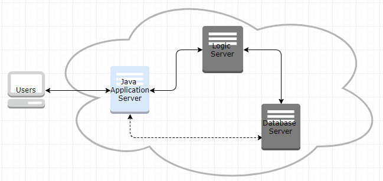
Figure 3. Light ERP Architecture
A function-oriented design method depends on decomposing the system into a set of interacting functions using a centralized system shared by these functions. Functions (or, sub-routine) can maintain local state information but only for execution of it locally. In comparing this approach with Object-oriented design method, function-oriented approach has benefits (Sommerville, 1994),
The function-oriented design process involves how to identify data transformation in the system to develop, how to decompose functions into a hierarchy of sub-functions, how to describe the operation and interface of entities, and how to document the flow of control within system. In practice, the iterative prototype method has to be in place along with the functional-oriented approach above to have rapid feedback and high-quality software through test. Figure 4 represents possible consistent approach from requirement gathering through software design.

Figure 4. Iterative Prototyping
The prototyping design model pairs up well with functional-oriented method because this design approach is to provide PT Matahari with the tailored light ERP software which comprises multiple subsystems. This approach follows component-based software engineering (CBSE), which makes system as a loosely coupled collection of components to provide the services each other as described in good software.
PT Matahari needs business software to manage customer, inventory, and sales order accurately in real-time basis. This software shall enable PT Matahari to plan and forecast better than its competitors in the paint distribution market.
Users shall enter, retrieve, and update all business parties’ information to the designated database system, which includes address book master, employee master, supplier master, business partners, and organizational entities.
It is crucial to have centralized database system to manage information on item master, item branch, item location, item cost, item price, item as-of quantities, and item ledger. Item location needs updating whenever there is any movement in inventory, and item ledger gets written when there is any change of item quantity and item cost.
Sales order shall control the sales of item using header and detail relationship. The customer information contributes for the header, and the item information converts to the detail information. This group of application validates both customer and item, defaults value from customer management system and inventory management system, check availability, soft commit inventory, suggest the best sales price, hold orders, and check the margin of a specific sales. The sales detail repeats the sales header to override the header information in detail lines.
The functional suitability and usability are focal points in this light ERP project. According to ISO/IEC 27000:2014, functional suitability is degree to which a system provides functions to meet stated/implied the functional requirements needs. These attributes affirm that the software to develop performs what the stakeholders requested, but also it performs three characteristics which are functional completeness, functional correctness, and functional appropriateness as shown in figure 5 (Rodriguez et al., 2016).

Figure 5. Functional Suitability
Software usability is a measure of how well users can take advantage of some of systems’ functionality (Barbacci, 2004). This attribute defines how usable a software is to learn to operate, prepare inputs for, and interpret outputs of a system. The intersection in figure 6 depicts simplified definition of a good usability.
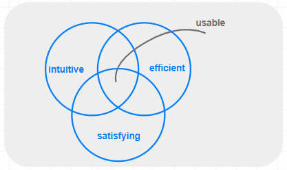
Figure 6. Software Usability
A Use Case Diagram user’s interaction with the system (Stephens, 2015). Three use cases below follows the annotation <<include>> to mean the task includes the subtask and <<extend>> when a subtask might occur only under some circumstances.
Figure 5 depicts the use case of customer management system. The actors are the account manager who review and create customer. All entities have the address book master which includes mailing address, who’s who, phone information, and email information. The account manager can create a customer information when there is a specific address book number given to each entities.
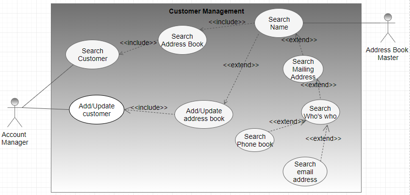
Figure 7. Customer Management Use Case
In many project, some other representation can give better idea to the developer and stakeholders. Business Process Model and Notation (BPMN) gives better understanding through given example as depicted in figure 6.

Figure 8. Customer Master - BPMN
PT Matahari focusing on real-time inventory managements. As figure 7 represents, all available system are actors. Each transaction performs checking availability, add inventory, or subtract inventory.
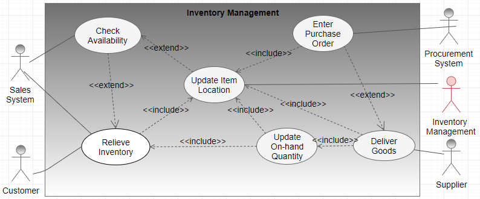
Figure 9. Inventory Management Use Case
Same can be represented using Business Process Model and Notation (BPMN)

Figure 10. Inventory Management - BPMN
Sales system and warehouse interact with sales management system to fulfill the request made by the business partner. Use case in figure 9 simply represents high level interface between actors.
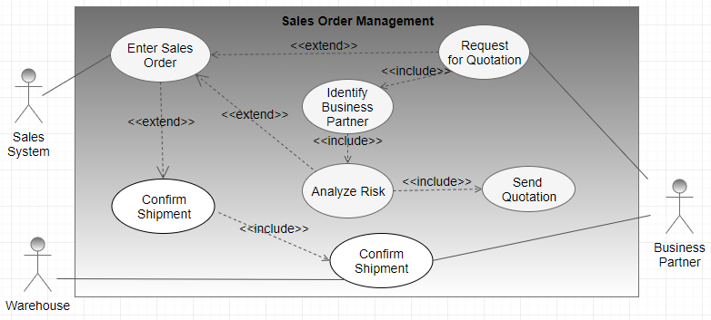
Figure 11. Sales Order Management Use Case
Above use case can be translated into figure 10 using Business Process Model and Notation (BPMN).
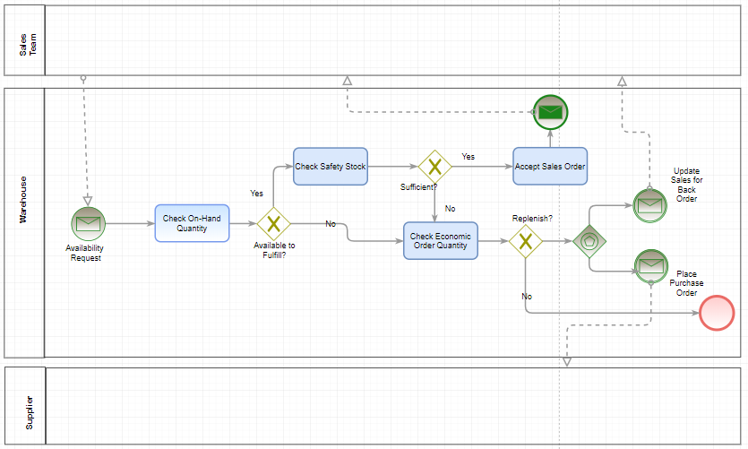
Figure 12. Sales Order Management - BPMN
The architecture is the highest level of abstraction of system, which shows how the major pieces of the finished software will fit together and interact with each other (Stephens, 2015). The choice of style varies depending on the actual software to build. Since my project for this course is building a light Enterprise Resource Planning (ERP) software, the design model is to be the function-oriented design method in distributed environment. A simplified software is to be rebuilt similar to the commercial enterprise solutions in the market using the architectural style of Client-Server Architecture style.
Most of enterprise solutions including ERP software follows the client-server architecture style which the client sends a request, and the server returns a response. Clients and serves exchange messages in a request-response pattern using inter-process communication (IPC). A simple communication channel or, topology will be HTML client with replicated specification, (using HTTP), Java Application Server for presentation, (via JDBC), Logic server to perform logics and functions, (through ODBC), and database server in highly distributed environment. In this communication layer, Java application server is server for the HTML client, but at the same time, it is the client for the logic server. Figure 13 depicts how each servers interact with each other.

Figure 13. Client-Server Architecture
The advantage of this well know client-server architecture style is PT Matahari can have centralized data repository (Database Server), better security making use of Lightweight Directory Access Protocol (LDAP), and a single logic server is sufficient to handle all request made by clients. On the other hand, the disadvantage of this architecture is that the failure of logic server causes whole system down, the high usage of network between the application server and HTML clients.
The majority of enterprise Solutions for huge organization follows this styles including E-Business Suites (EBS), JD Edwards, and PeopleSoft. Since the primary goal of enterprise solutions is to record all transaction data into database for better planning and forecasting, the centralization and segregation nature of this style is suitable for the enterprise solutions.
The purpose of Computer Aided Software Engineering (CASE) is to make the software development project and its maintenance easier and more reliable by putting all software development processes into the repository (Galin, 2004). Here are the Sequence and State Transition Diagrams based on the use-cases on inventory and sales management.
A sequence diagram shows how objects collaborate in a particular scenario. It represents the collaboration as a sequence of messages with the timing of messages between collaborating objects. (Stephens, 2015).
Real-time on-hand quantity gets maintained using both Item Location and Item Leger. Both files gets updated whenever there is any transaction which affects the quantity as depicted in figure 14.

Figure 14. Sequence Diagram – Inventory
The light ERP system to develop for PT Matahari is highly dynamic to control real-time inventory. Figure 15 depicts how replenish happens through procurement activity when the inventory level is low or below the safety stock defined.
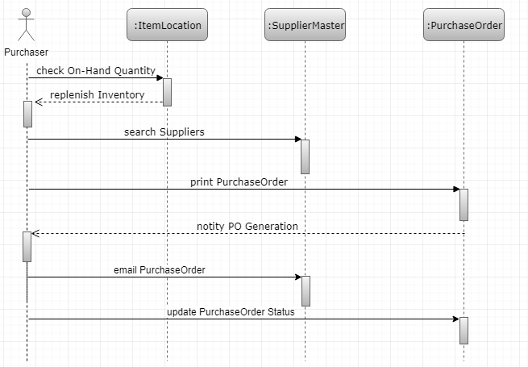
Figure 15. Sequence Diagram – Replenish
Note that above sequence diagram does not include the update of item location and insert of item ledger information which occurs during purchase order receipt activity.
Figure 15 depicts the sequence of activity takes place from placing sales order through shipment confirmation.

Figure 16. Sequence Diagram - Sales Process
Sales order starts when a customer call PT Matahari with information inventory, request date, quantity requested and so on. All commitment is sub-function of availability check. In real scenario, the status of sales order detail varies depending on the credit level, inventory availability, and work day calendar.
A vertical lines underneath participants is a lifeline which represents the participant sitting there and waiting for something happen. And execution specification (for example, enter Order) represents a participant is doing something. Labeled arrows with solid arrowheads (for instance, acknowledge Order) indicates synchronous message, where open arrow header (e.g., enter Order) indicates asynchronous message. And naturally dashed arrows with open arrowheads represent return messages sent in reply to a calling message.
A state-transition diagram presents a sequence of states that an object goes through during its lifecycle. This diagram is to describe the changes of states for an object or a component. Here review the objects the Item Location in Inventory Management system and the Sales Order Detail file in Sales Order Management.
Figure 17 depicts how the status of Item Location changes through addition (commonly, purchase order receipt) and subtraction (sales order shipment) of inventory. Below diagram represents all possible status of item location including held/frozen and disposal as an action.

Figure 17. State Transition Diagram - Item Location
In any ERP application, Sales module is one of heaviest suite to implement. Figure 18 is the representation of the change of sales order detail. From the capturing the customer’s purchase order through sales update which interfaces with Account Receivable and General Ledger which are basic modules to generate multiple financial reports.

Figure 18. State Transition - Sales Detail
Figure 19 below supports the detail activities and events of figure 18 including interface with other objects in the system.

Figure 19. State Transition and Interface
There are multiple forks to represent the separation of system. Likewise, other ERP system, the system to develop for PT Matahari is focusing on the integration between modules. In this diagram, the change of status is controlled using columns order quantity (= shipped quantity + cancelled quantity + backordered quantity), and dates (order date, shipped date, cancelled date, and backordered date).
The Unified Modeling Language (UML) 2.0 defined 13 diagrams which comprise the Structure Diagram and Behavior Diagram. Class Diagram and Activity Diagram are two basic diagrams to understand the objects and classes in object-oriented modeling approach. Regardless the actual model to use, both Class Diagram and Activity Diagram entails the representation of a certain component in a system.
A Class Diagram represents the classes, their properties and methods, and their relationship. A class diagram couples the function-oriented design method which is the basic approach for this project as shown in the table 1.
Table 1. Object-Oriented vs. Function-Oriented
| Components in Object-Oriented Methodology | Function-Oriented Model |
|---|---|
| Class | Module or Subsystem |
| Properties | Application specification |
| Methods | Business Functions written in C |
| Relationship | Hierarchy |
Note: Above relationship is highly simplified relationship.
Sales order entry is one of major application request by PT Matahari. Sales order is made up of Sales Order Header in relation with the customer and Sales Order Detail to hold information on the item ordered by the customer. Figure 20 depicts detail on the relationship between classes. In this figure, a rectangle represents class on top in bold. Two sections below give the class’s properties and methods respectively.
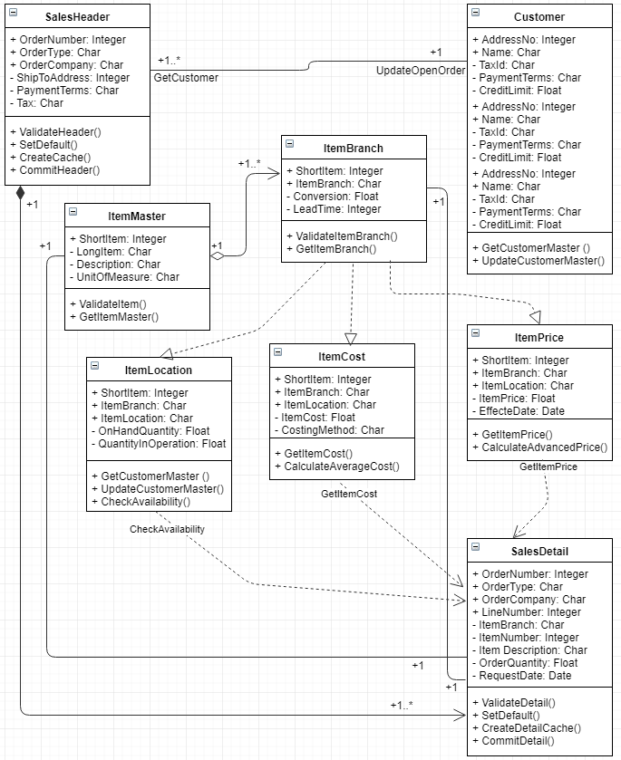
Figure 20. Class Diagram - Sales Order Entry
One customer can have multiple sales orders, and a single sales order comprises multiple items. Depending on the item location, both item price and cost can be vary. All methods are public for reuse in other module. However, item location, item cost, and item price is depending on the item branch information.
The design pattern is a description for how to solve commonly occurring program in software development life cycle. The complexity of Enterprise Resource Planning (ERP) software, even when it is a slimming down version, requires loose coupling and high cohesion, hence the choice of software design pattern is composite design pattern. The composite design pattern composes objects into tree structure to represent its hierarchies. This composite allow clients to treat individual objects and the composition of objects uniformity. This pattern can be useful when the relationship of objects are 1 to many (GeeksforGeeks, n.d.).

Figure 21. Composite Design Pattern
In figure 21, Cs and Ls represent Composite and Leaf respectively. This pattern suitable when categorizing business functions with master business functions, minor functions and so on. For example, Sales Order Master business function include minor function check availability but at the same time check availability is composite function which calls sub-function which can read user defined availability, safety stock, and generate supply and demand information. Hence, this composite design pattern suits for function-oriented design method as well for the enterprise solutions.
An activity diagram represents workflow for activities which optionally includes the objects. In activity diagram, arrows represents the direction of workflow. As a result, the activity diagram is a bit like a flowchart showing how work flows. This diagram will give clear flow of work to PT Matahari. In this diagram, the thick bar or fork represents parallel activities.
Figure 22 depicts the activities of item availability checking.
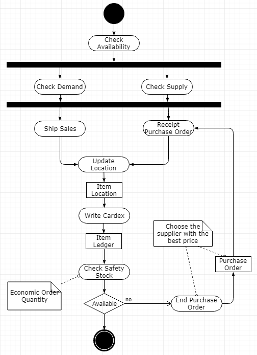
Figure 22. Activity Diagram - Availability Checking
Real-time inventory movement is recorded in the item location file whereas the history of supply and demand records are written in item ledger file.
The sales activity records both customer and item which result in shipment in warehouse and account receivable for invoice. Figure 23 represents the sales order activities in detail.
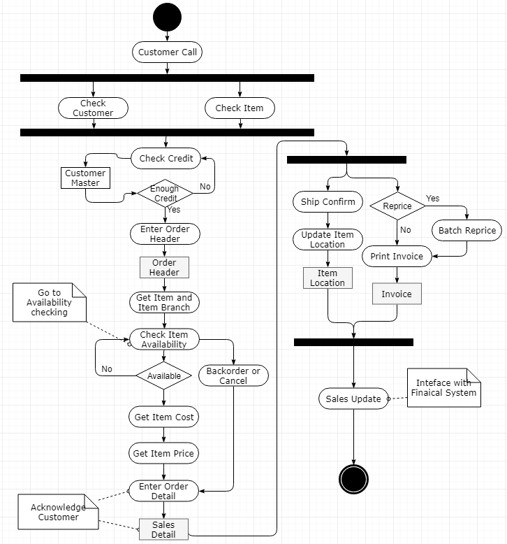
Figure 23. Activity Diagram - Sales Order Management
For easier reading, the objects/tables are added in these activity diagrams.
A simple representation of verification and validation during different stages of software development life cycle is depicted in figure 24 using V-model. The v-model represents clear semantics though this project does not follow same. In this figure, the top represents validation where below validation processes show verification (Mehle, 2017).
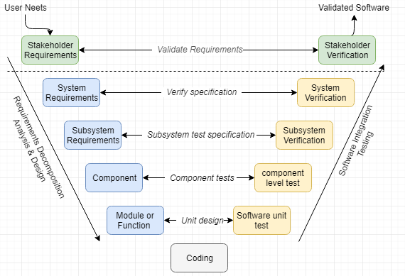
Figure 24. V-Model Representation of Verification and Validation
Validation is to check whether “we build the right software” which satisfied the functional requirements by PT Matahari. Figure 25 represents in different swim lane to have better view for the V-V approach (Boehm, 1979).

Figure 25. Software Design V & V Sequence
This project aims for building a light ERP software tailored for PT Matahari which will be the backbone enterprise solution in the future. The validation step in figure 25 is to ensure that this software design document is consistent, complete, traceable, and modifiable to meet high quality requirement.
As depicted in figure 26, the review and inspection is iterative steps to validate the document and outcome with the stakeholders. This review takes place against the analysis made using use case, sequence diagram, state transition diagram, class diagram, and activity diagram in the area of customer master management, inventory management, and sales order management. This validation technique goes through 3 different steps as depicted in figure 26. (Kotonya et al., 2008).
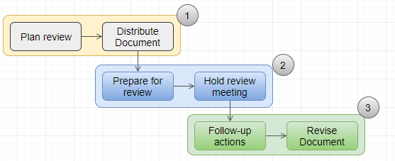
Figure 26. Review and Inspection for Software Design Validation
Other validation technique in software design to consider are prototyping, traceability, and testing.
Verification is to conform its specification to meet “we are building the software right.” Verification ensures every steps followed in the process of implementing the software to result in the right product. It is imperative to check consistency of the software requirements specification artifacts and other software development procedures (Jackson et al., 2008).
The inspection is commonly used as verification technique to audit in detail and to review software codes and its documentation. This code review is effective technique to discover errors as shown in figure 27.
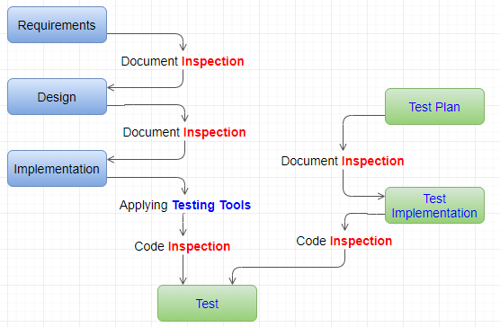
Figure 27. Inspection and Testing for Software Design Verification
In inspecting the real-time inventory management for PT Matahari, make it sure that there are multiple entries for Item Master, Item Branch, Item Location, Item Cost, Item Price, and Item Ledger with all necessary columns in it including easier search of each controls. Other available techniques for verification are testing, demonstration, analysis, and cleanroom process as depicted in figure 28 (Al Saeed, 2018).

Figure 28. Cleanroom Process
Throughout validation process, the requirements Traceability Matrix links requirements to ensure that all defined requirements are being tested and verified. Table 2 and table 3 show the relationship between two matrix to enable forward and backward track and trace (Ludwig Consulting Services, 2010).
Table 2. User Requirements Matrix for PT Matahari
| ID | User Requirements | Forward Traceability |
|---|---|---|
| U1 | A user shall enter customer master record | S10 |
| U2 | A user shall enter address book master | S11 |
| U3 | A user shall enter item master | S12 |
| U4 | A user shall register item branch information | S12 |
| U5 | A user shall update item cost | S13 |
| U6 | A user shall delete item price | S14 |
| U7 | A user shall select customer for sales order header and item branch for sales order detail | S15,S16 |
Note: The numbering is simplified for easier reading
Table 3. Functional Requirements Matrix for PT Matahari
| ID | System Requirements | Backword Traceability |
|---|---|---|
| S10 | The system shall manipulate the entity (add, change, delete, and view) | U1 |
| S11 | The system shall manipulate customer master information | U2 |
| S12 | The system shall manipulate item master, item branch, and location master | U3 |
| S13 | The system shall calculate average cost and validate the cost of item | U4 |
| S14 | The system shall return the best item price for sales with combination of customer information | U5 |
| S15 | The system shall validate and default sales order header information based on customer master in adding/changing the sales order header | U6 |
| S16 | The system shall validate, default, and create cache for sales order detail in selecting item branch information | U7 |
Table 4. Traceability Matrix with Iterative Testing
| Req. ID | Description | TC001 | TC002 | TC003 |
|---|---|---|---|---|
| ... | ||||
| U4 | User can add/change/delete item cost | Yes | ||
| ... | ||||
| U6 | User can add/change/cancel sales order header and detail | Yes | ||
| ... | ||||
| U7 | Sales order basic functionality | Yes | Yes | Yes |
| ... |
Note: Above table only included limited number of requirements. Same traceability document can be expanded to include Business Requirements, Functional Design, High Level Design, and Detail Design (Al Saeed, 2018).
Above traceability matrix shows,
If a Test case fails, traceability helps determine the corresponding functionality easily. It helps ensure that all requirements are tested (Al Saeed, 2018). Figure 23 depicts traceability matrix which demonstrates how traciability traces and tracks. Generally, tracking to describe all change made based on the initial status. On the other hand, tracing go backward based on the end component.

Figure 29. Iterative Relationship for Testing in Matrix
The performance of a certain software is highly dependent on both hardware and software. Multithread programming is approach to maximize the performance of a certain software using computer operating system resources including CPU, main memory, bus, and so on. Computer operating system comprises process management, I/O management, main memory management, file management, networking, security, and command interpreter when limiting the interface with software. The process is simply the program in execution making use of the computer resources. A thread, a Light Weight Process is a fundamental units of CPU utilization which are made up of program counter (PC) registers and stack space. A thread shares these resources with other threads (open files and signals for instance). This mechanism does not require each threads to deal with memory management (Tong, 2010). As depicted in figure 30, multithreading in the user space which deals with the software to develop gives great benefit against a single threaded kernel.
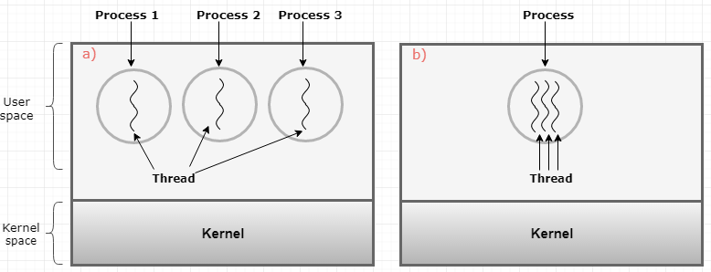
Figure 30. a) Three Processes with one thread. and b) One Process with One Three Threads
Each threads has its lifecycle as depicted in figure 31.

Figure 31. Thread Lifecycle
Commonly, the benefits of using threads are huge especially for the enterprise solutions as below (Tong, 2010),
The light ERP software developing for PT Matahari requires multiple kernels to support various functionality it requires. Some of kernels required are: Universal Batch Engine (UBE) Kernel, Security Kernel for authentication, Lock Manager Kernel, Call Object Kernel to call business function written in C/C++, Network Kernel to maintain connection, Management Kernel, Scheduler Kernel, Queue Kernel to make jobs wait in the job queue, Workflow Kernel, Metadata Kernel to distribute the specification, and so on.
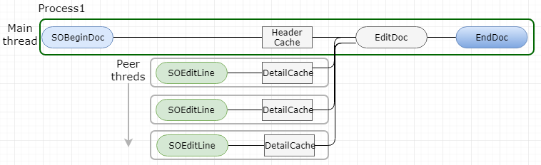
Figure 32. Sales Order Entry using Multithread
Above figure 32 depicts general routine for the application which has header and detail relationship. Users shall enter detail information row by row manually or hundreds of records using excel import or copy/paste options. As a result, these applications may cause bottleneck for the performance in general. To have maximum performance as a whole system, call object kernel which deals with business function in the interactive applications and network kernel to maintain connection among multiple kernels in logic server, and java/xml codes in Java Application Server are the best candidate for multithreading. The program logic to code for PT Matahari need building with care because supposing multithreading is crucial factor to maximize the benefit of the use of thread for the engineered light ERP system for PT Mathari.
It is essential the functions to build are thread safe since these functions are managed by all object kernel with multithread configuration. To make each program code thread safe,
Figure 33 depicts general performance testing process (tutorialspoint, n.d.).

Figure 33. Performance Testing Process
Performance testing is essential requirement from PT Matahari to determine whether the software was built right without affecting daily business which requires speed, scalability, stability, and reliability. Table 3 represents the sytems’s ffunctional requirement with test case as shown in table 5.
Table 5. Test Case Matrix for Performance Test
| System Requirement | Test Case ID | Description |
|---|---|---|
| S16 | Test001 |
Verity if user can set thread dynamically? |
| S16 | Test002 | Verify if user can copy/paste 100 rows of sales order detail information within 60 seconds |
| S17 | Test003 | Verity if 15 users can enter sales order at the same time without hitting commit fail error |
| S17 | Test004 | Verify if a user can enter 100 order detail within 60 seconds in single-threaded mode |
In any project, budget, time, and scope of work are general constraints as depicted in figure 34. So software engineering is science to build software without exceeding budget nearly on time. Other factors affect project can be resources and risk.

Figure 34. Project Constraints
Technical constraints are rigid technical design decision which is not supposed to be changed commonly given by stakeholders (Keeling, 2014).
Many design goals translated into non-functional requirements, the application domain, or quality attribute to meet performance, dependability, cost, maintenance, and end-user requirements. Commonly, these quality requirements are design constraints for the project (UWA, n.d.).
Business constraint is the business decision which cannot be changed during project life cycle.
This software design document bridges the gap between stakeholders and developers by adhering to the software engineering methodology to build successful a light Enterprise Resources Planning solution for PT Matahari. This document focuses on the entity management, real-time inventory management, and sales order processing in detail.
This document suggests function-oriented design methodology in client-server architecture because this is proven approach for the enterprise solutions in the mark. In detail, reverse engineering is heavily used to make a workable software based on commercial software. In turn, this procedural effort of analyzing, understanding, duplicating an existing product including its components. In building core products, UML diagramming (Use Case Diagram, Sequence Diagram, State Transition Diagram, Class Diagram, and Activity Diagram) will help to communicate the project team better.
Lastly, this document reviews multithread opportunities in Call Object Kernel, network kernel, and Java application server. This document reviews assumptions and constraints in this project. Across phases the verification and validation tools are used to comply with contains in various layers.